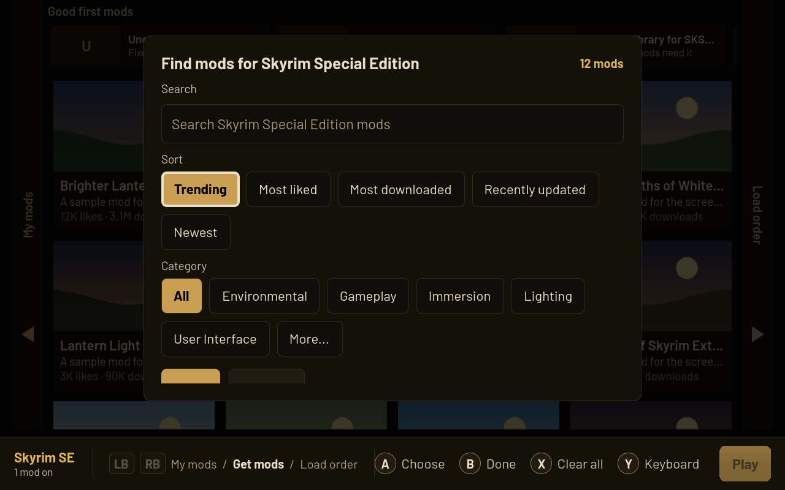
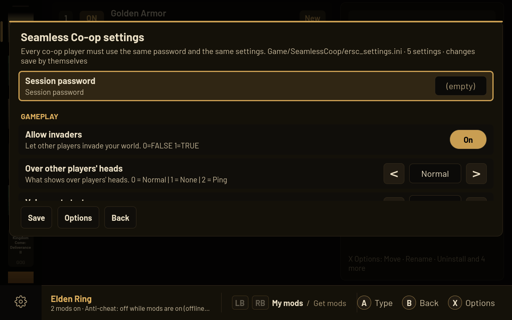

Everything a handheld modder needs


Built for your handheld
Controller first, in Game Mode and Desktop Mode. A selects and B goes back, everywhere. Touch works for every button.
Keyboard and mouse, the PC way
W A S D, Q and E for pages, F to find, R for options, hold Tab for the wheel, hold Space to play. Click, double-click and right-click work as you expect.
Nexus Mods built in
Browse with pictures, likes and downloads. Sign in through Chrome. Mod Manager Download always asks first, so nothing downloads without your say.
Steam, Epic and GOG
Games from Steam and Heroic, on internal storage and SD cards. Mods from Nexus, Thunderstore, or zip, 7z and rar files you already have.
Safe by design
Nothing installs without you and everything can be undone. Saves are backed up before a modded Play, and any game file a mod replaces is backed up too.
Mods apply themselves
Changes go into the game a few seconds after your last one. No Save button to forget. Play checks the game first and offers any fix as a button.
Mod settings with real controls
Edit a mod's settings file with switches, sliders and lists. Your changes are kept when the mod updates.
Fits right into Steam
Optional Steam menu plugin (Decky), Steam library art, interface size from 50% to 150%, and animations Full, Reduced or Off.


Real Turbine screens with made-up sample mods.
What's coming: 0.64 lines up a mod's required mods for you, one press each.
Elden Ring and the other FromSoftware games
Elden Ring, Nightreign, Armored Core VI, Dark Souls III and Sekiro run their mods through me3, and the game folder is never touched. Start them from Steam's own Play: pick Turbine (mods) once in the game's Compatibility settings (Turbine shows the steps and sees when it's set), and Game Mode shows the game as usual. With no mods on, the game starts clean.
Online play stays clean. Turbine never adds mods to a game that needs its anti-cheat online: the Get mods page isn't there, Play with a mod on is refused, and the game's status says why. The FromSoftware games play their mods offline, and Turbine says so plainly before the first modded Play.
Seamless Co-op made easy


- Co-op never starts without a session password.
- Turbine gets the newest version and keeps only one copy per game.
- Optional Co-op tile in your Steam library, asked about once.
Install on SteamOS
You do this once, in Desktop Mode. After that Turbine lives in your Steam library and keeps itself up to date.
-
Switch to Desktop Mode
Press the Steam button, then Power, then Switch to Desktop.
-
Download Turbine
Download TurbineModManager.flatpak from the latest release. It goes to your Downloads folder.
-
Install it
Open Downloads and double-click TurbineModManager.flatpak. Discover opens; press Install. The first install also downloads the parts Turbine runs on from Flathub, so give it a few minutes.
Prefer a terminal?
flatpak install --user ~/Downloads/TurbineModManager.flatpak -
Add it to Steam
Open the app launcher (bottom left), find Turbine Mod Manager, right-click it and choose Add to Steam.
-
Play in Game Mode
Double-click Return to Gaming Mode on the desktop. Turbine is in your Library under Non-Steam. Start it like any game.
The first time it starts, Turbine shows a short tour of the buttons. Settings, Help, Beginner tutorial brings it back any time.
Steam menu plugin (optional)
With Decky Loader, Turbine gets a panel in the Quick Access menu: Mods on or off and Play for the game you're in, without opening Turbine. In Decky, open the gear, then Developer, then Install Plugin From URL, and paste:
https://github.com/Ravenor907/Turbine-Mod-Manager/releases/latest/download/Turbine-Decky.zip
No Developer tab? In General, turn on Developer Mode first. Turbine's Settings, Help, Steam menu plugin shows the same step with a Copy button.
Controls
| Do | Controller | Keyboard | Mouse |
|---|---|---|---|
| Select | A | Enter or Space | Click |
| Back | B | Esc | Back side button |
| Options | X | R | Right-click |
| Find | Y | F | |
| Pages | LB / RB | Q / E | Page names, Forward side button |
| Page up, down | LT / RT | Wheel | |
| Quick wheel | View | Hold Tab | |
| Settings | Start | Esc on a game's first page | |
| Play | Hold Start 3 seconds, or A on Play | Hold Space 3 seconds | Click Play |
| Pointer | Right stick | Mouse | |
| Size | Ctrl and + or - | Ctrl and wheel |
The hints at the bottom follow whatever you used last. Touch works for everything: tap to do, long-press for options.
Games
Full rules
Where every file goes, load order, loaders and checks before Play.
- Skyrim Special Edition
- Cyberpunk 2077
- The Witcher 3
- Stardew Valley
- Valheim
- Lethal Company
- Risk of Rain 2
- Kingdom Come: Deliverance I and II
Through me3, game folder untouched
- Elden Ring, with Seamless Co-op
- Elden Ring Nightreign
- Armored Core VI
- Dark Souls III
- Sekiro
Every other game
Every other Steam and Heroic game gets Basic support: mods go where their files say, and Turbine asks once, with its best guess ready, when it can't tell.
Never modded: games that need their anti-cheat online, such as Apex Legends, Destiny 2, Fortnite and Rainbow Six Siege.
Questions
Can I get banned?
Turbine never adds mods to a game that needs its anti-cheat to play online. The FromSoftware games run mods offline through me3, and Turbine tells you plainly before the first modded Play. Don't take a save you modded offline into online play.
How do I play Seamless Co-op?
Get Seamless Co-op for Elden Ring in Turbine, set a session password in Co-op settings (everyone in your group uses the same one), then choose Play Seamless Co-op. It loads only that way, so Play with mods stays solo.
Do I need Nexus Premium?
No. A free Nexus account works: Nexus's own download page opens inside Turbine, you press Slow download, and the mod is added and turned on. Premium skips that page so a mod installs with one press. Thunderstore mods and files you already have need no account.
How do I sign in to Nexus with Google?
Google won't sign in inside an app, so Turbine signs in through Chrome with a small browser helper. Set it up once in Desktop Mode from Settings, Getting mods; Turbine shows the steps. It talks only to Turbine on your own device and only reads Nexus's pages.
Does it work on Windows or other Linux systems?
No. Turbine is made for SteamOS handhelds.
How does it update?
Turbine checks the Releases page and updates itself. In Game Mode it closes when the update is ready, and you start it again from Steam.
How do I uninstall it?
Turn your mods off, set each FromSoftware game's Compatibility back to your usual Proton in Steam, then remove Turbine in Discover.
Help
A game won't start
- Press View, then Play options, and play without mods. If that starts, a mod is the cause.
- Press View, then Game menu, then Why won't it start? It checks the usual causes and offers each fix.
- Go back to a setup that worked, in the same Game menu, puts back the last mods that played fine.
Report a problem
- In Turbine, open Settings, Help, Report a problem and press Save report. It saves one text file in Downloads. No keys or passwords.
- Open a new issue, say what happened, and attach that file.